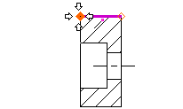
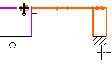
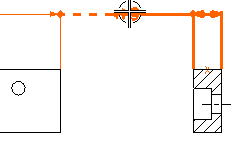

创建第二个水平尺寸
-
放大剖视图。
-
选择上方的水平边。

-
单击以放置尺寸。

您想让这个尺寸和创建的第一个尺寸水平对齐。
-
在选择条上，取消选择关联原点 。
-
先让尺寸高亮显示，然后拖动它到另一个水平尺寸上，直到看见辅助线和符号出现。
您并不是真的想让新尺寸的位置与另一个关联，只是想让它们水平对齐。

-
保持新尺寸与另一个尺寸水平对齐，然后向右拖动，最后释放它。

延伸线之间的空间太小了，所有箭头被放在延伸线之外，您也想把箭头线之间的水平线省略。